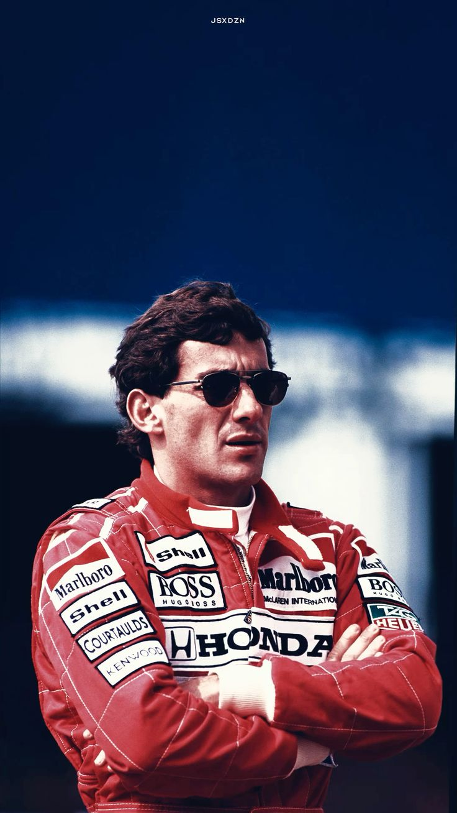
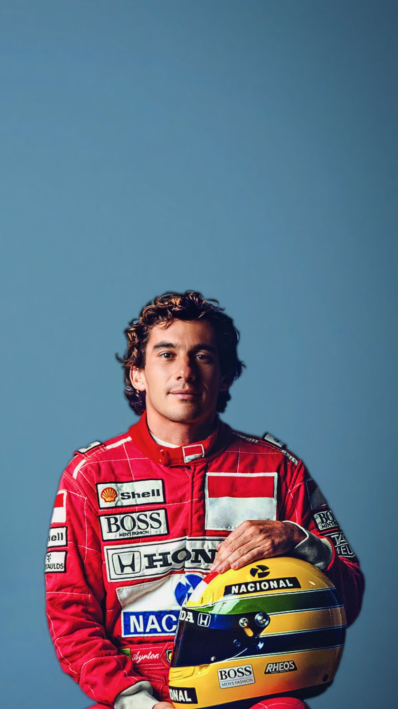
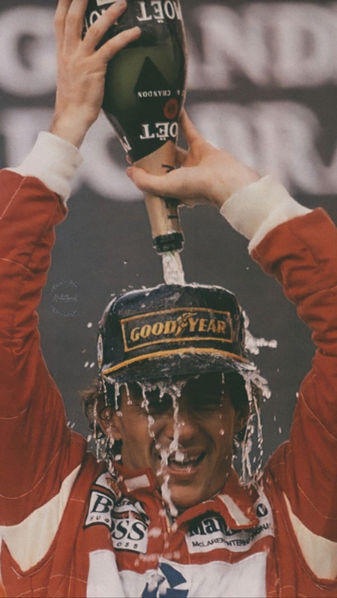
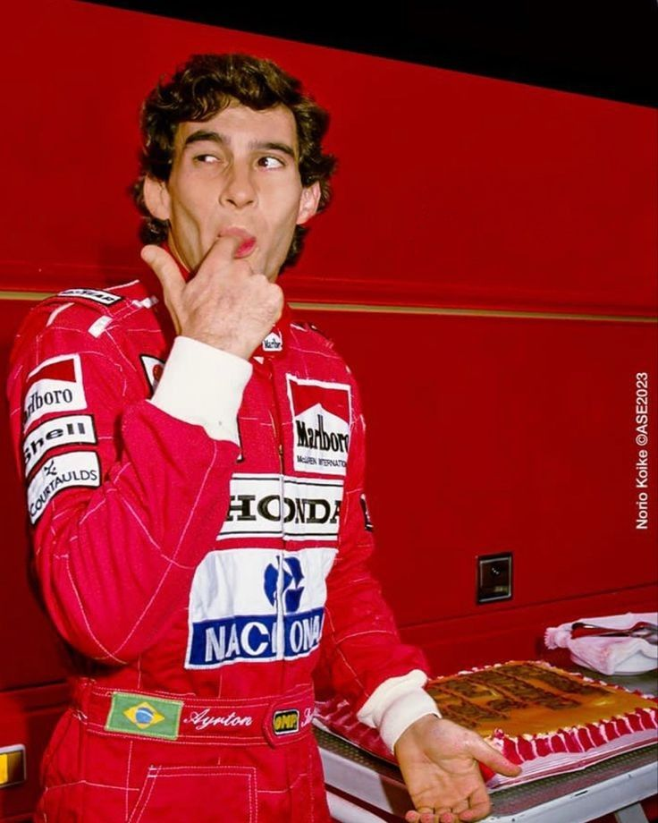
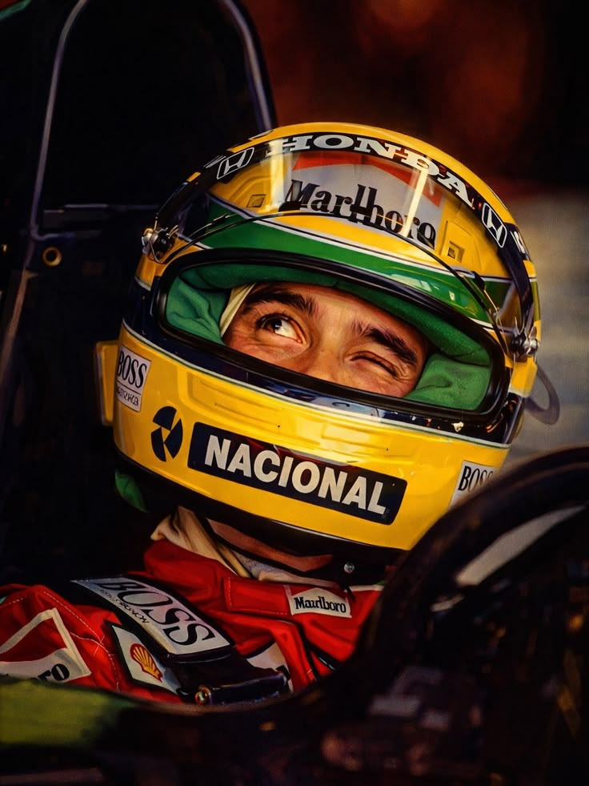
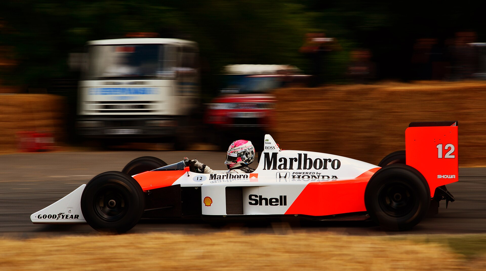
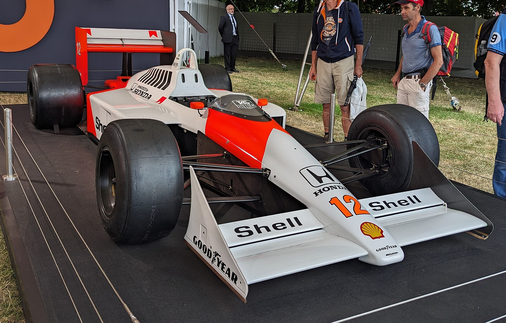
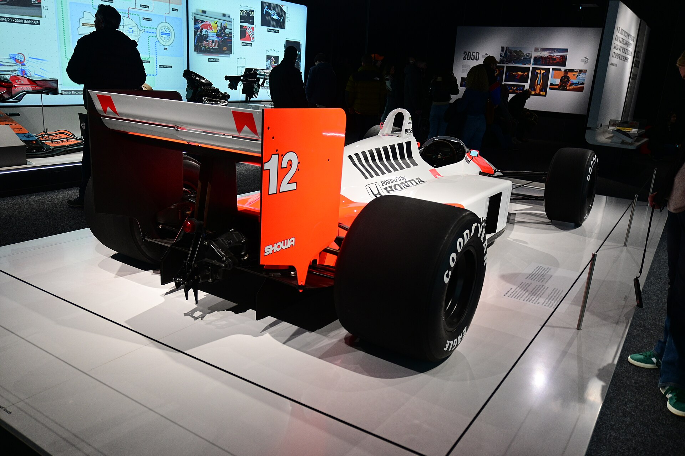

1960
Nasce em São Paulo
Ayrton Senna da Silva nasce em 21 de março de 1960, filho de Milton e Neyde.
Ayrton Senna da Silva · 1960 — 1994
Piloto brasileiro, tricampeão mundial de Fórmula 1 em 1988, 1990 e 1991. Venceu 41 Grandes Prêmios, largou 65 vezes na pole e ganhou seis vezes em Mônaco.
Começar a volta →
McLaren-Honda · 1988 — 1993
Três vezescampeão do mundo
1988 · 1990 · 1991
Capítulo 01 · O piloto
Ayrton Senna da Silva nasceu em São Paulo, em 21 de março de 1960. Correu de kart aos 13 anos e chegou à Fórmula 1 em 1984.
Estreou pela Toleman, passou pela Lotus e, em 1988, chegou à McLaren-Honda. Ali conquistou três títulos mundiais em quatro temporadas.
Era conhecido pela volta de classificação: 65 poles em 161 largadas. Na chuva, venceu corridas que pareciam perdidas, como Estoril em 1985 e Donington em 1993.
Fora da pista, deixou a ideia que virou o Instituto Ayrton Senna, dedicado à educação no Brasil.



Capítulo 02 · McLaren MP4/4 · 1988
Em 1988, o McLaren-Honda MP4/4 venceu 15 dos 16 Grandes Prêmios. Senna levou oito dessas vitórias e o primeiro título. Role para o carro entrar no box e ser desmontado peça por peça.


Foto: Nic Redhead, Goodwood 2014 · CC BY-SA 2.0
Telemetria ilustrativa, ligada à rolagem. Não é dado histórico.


Capítulo 03 · 1960 — 1994
Os marcos de uma carreira de 161 largadas na Fórmula 1, do kart em São Paulo ao tricampeonato.
Ayrton Senna da Silva nasce em 21 de março de 1960, filho de Milton e Neyde.
Aos 13 anos, estreia em competições de kart no kartódromo de Interlagos.
Conquista o título sul-americano de kart. Seria vice-campeão mundial em 1979 e 1980.
Muda-se para a Inglaterra e vence os campeonatos britânicos de Fórmula Ford 1600.
Leva o título na última etapa, contra Martin Brundle, e vence o primeiro GP de Macau de F3.
Corre pela Toleman. Em Mônaco, sob chuva, sai de 13º no grid e termina em segundo.
Com a Lotus, vence o GP de Portugal, no Estoril, na chuva. Foi também sua primeira pole.
Vence nas ruas de Monte Carlo pela primeira vez. Seria a primeira de seis vitórias ali.
Na McLaren-Honda, vence oito corridas e garante o título em Suzuka, no Japão.
O segundo título também é decidido em Suzuka, na penúltima etapa do ano.
Vence pela primeira vez no Brasil, em Interlagos, e fecha o terceiro título no Japão.
Sob chuva em Donington, passa quatro carros na primeira volta e vence. Em Mônaco, chega à sexta vitória, recorde.
Morre aos 34 anos, após acidente no GP de San Marino. No mesmo ano, a família cria o Instituto Ayrton Senna.
Capítulo 04 · Legado
If you no longer go for a gap that exists, you are no longer a racing driver.
Se você não vai mais atrás de um espaço que existe, você não é mais um piloto de corrida.
Teste de reação
Cinco luzes acendem. Quando todas apagarem, largue: clique no painel ou aperte a barra de espaço.
Abaixo de 0,200 s, algo acontece na pista.